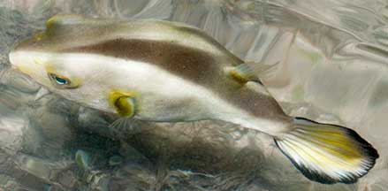

|
|
| fishes text index | photo index |
| Phylum Chordata > Subphylum Vertebrata > fishes > Family Tetraodontidae |
| Yelloweye
pufferfish Arothron immaculatus Family Tetraodontidae updated Nov 2020 Where seen? This fat plain pufferfish is sometimes seen on some of our shores, near seagrasses and reefs. Features: Grows to about 30cm, those seen 8-10cm. Body rather plain without markings, tail fin yellowish with a dark brown edge. Sometimes, the eyes are yellow. Sometimes, they are found in small groups. |
 SIsters Island, Feb 07 |
 Seringat-Kias, Apr 12 |
| Yelloweye pufferfishes in Singapore |
On wildsingapore
flickr
|
| Other sightings on Singapore shores |
Links
References
|